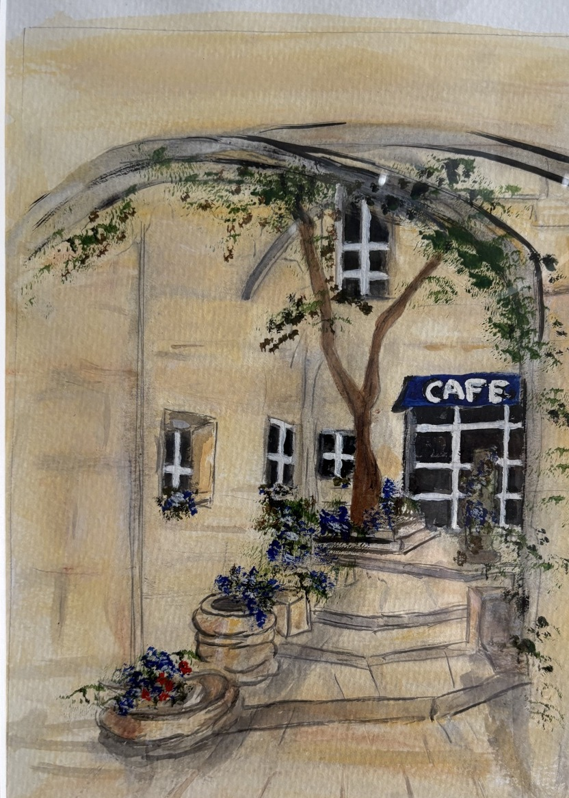
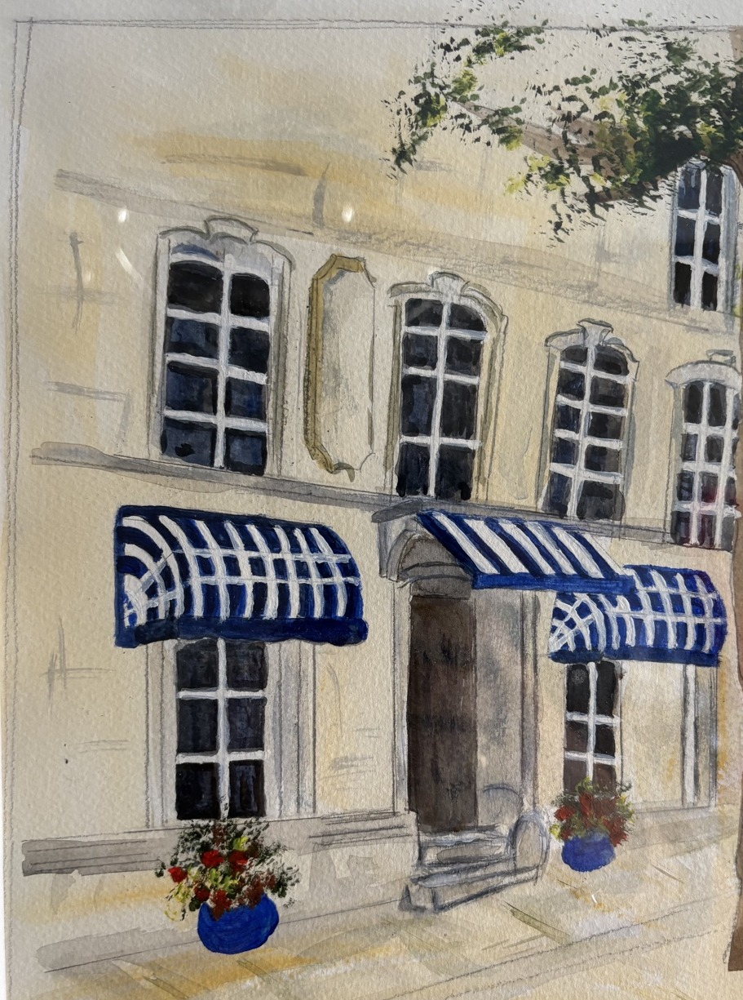
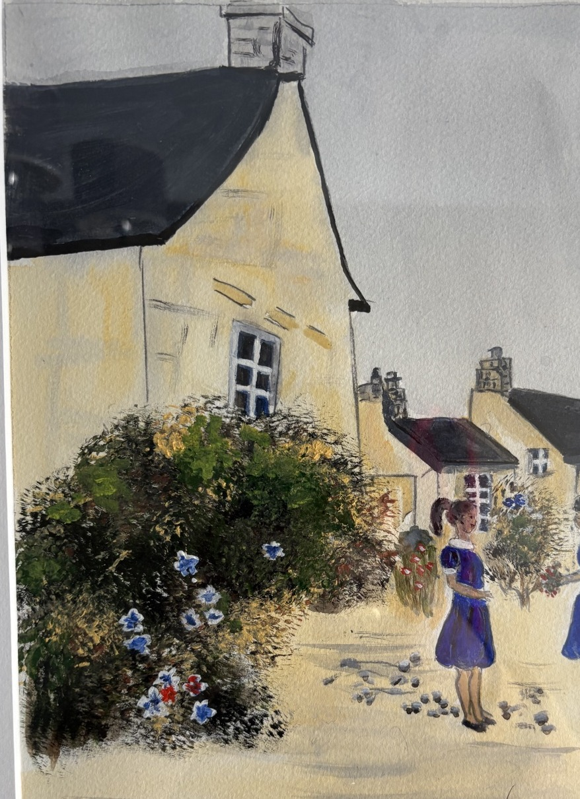

V. MURPHY ORIGINAL COLLECTION
The paintings
A growing catalogue of the surviving works. Images shown here have been cropped to remove the photographed mount/frame edges and present the artwork more cleanly.

Courtyard Café
Warm architectural study with café frontage and planting.
Fine-art prints from £24
Blue Awnings
Elegant façade study with vivid striped awnings.
Fine-art prints from £24
Village Garden, 2013
A village scene with figures, cottages and abundant planting.
Fine-art prints from £24